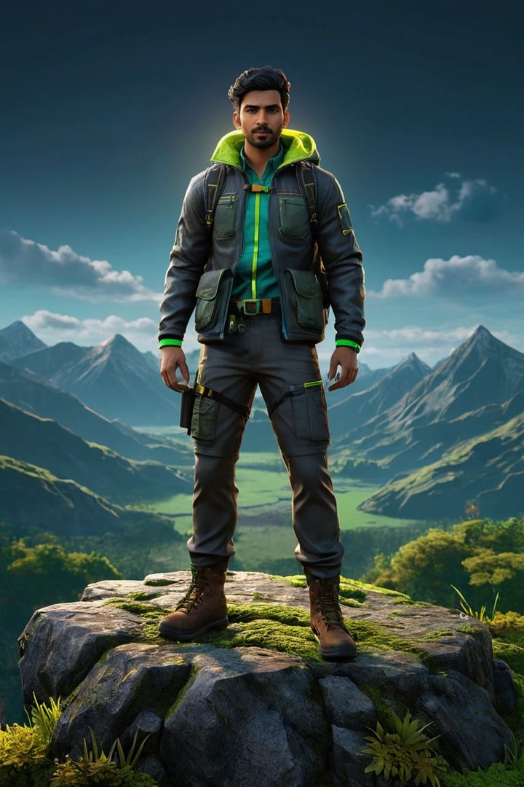
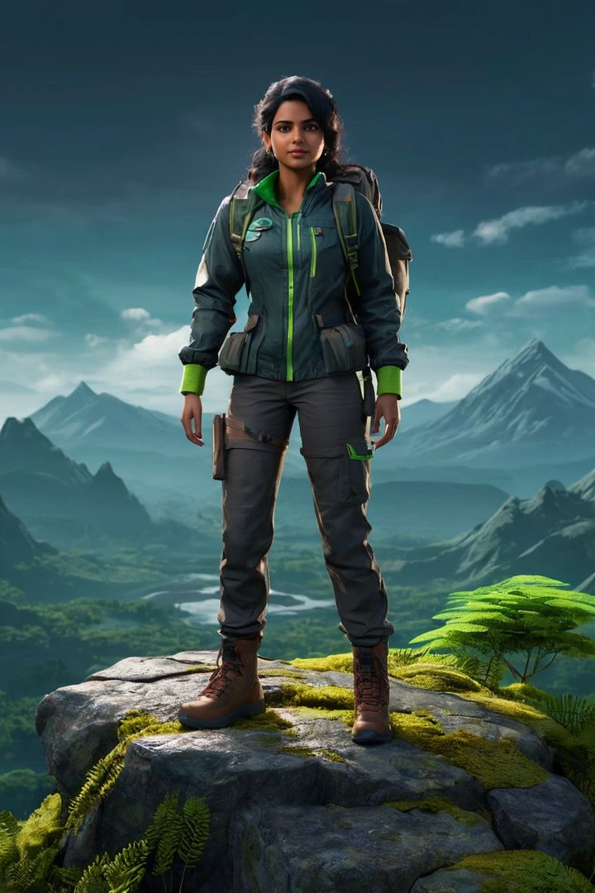
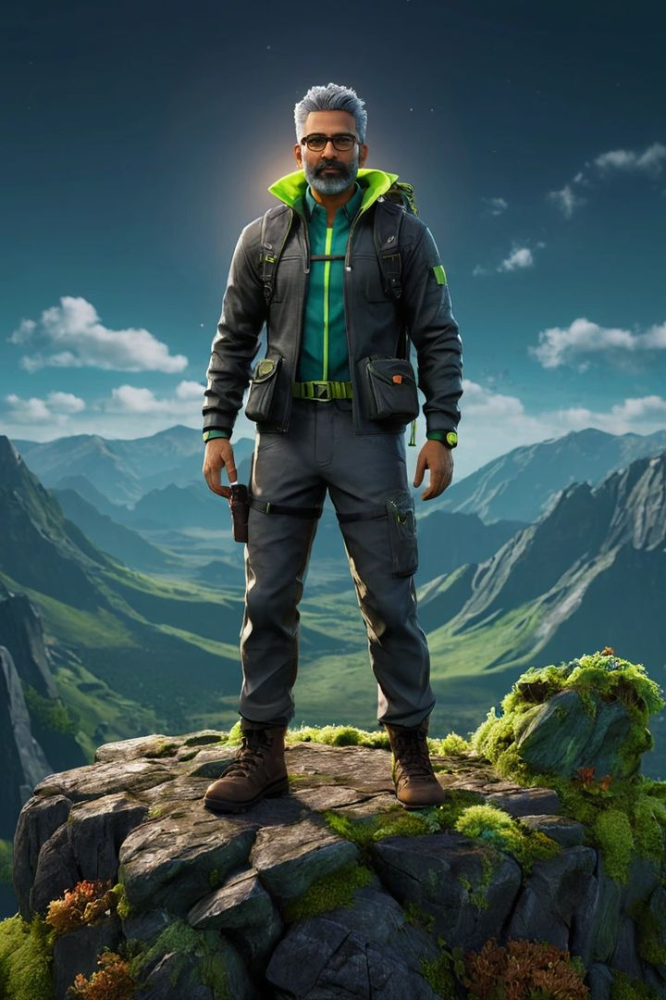
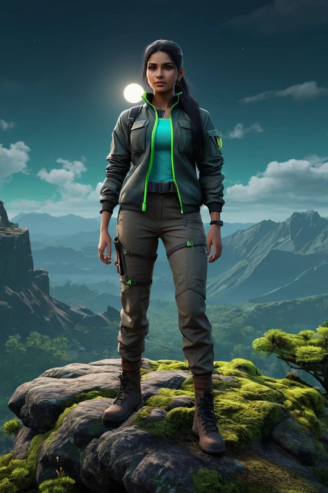
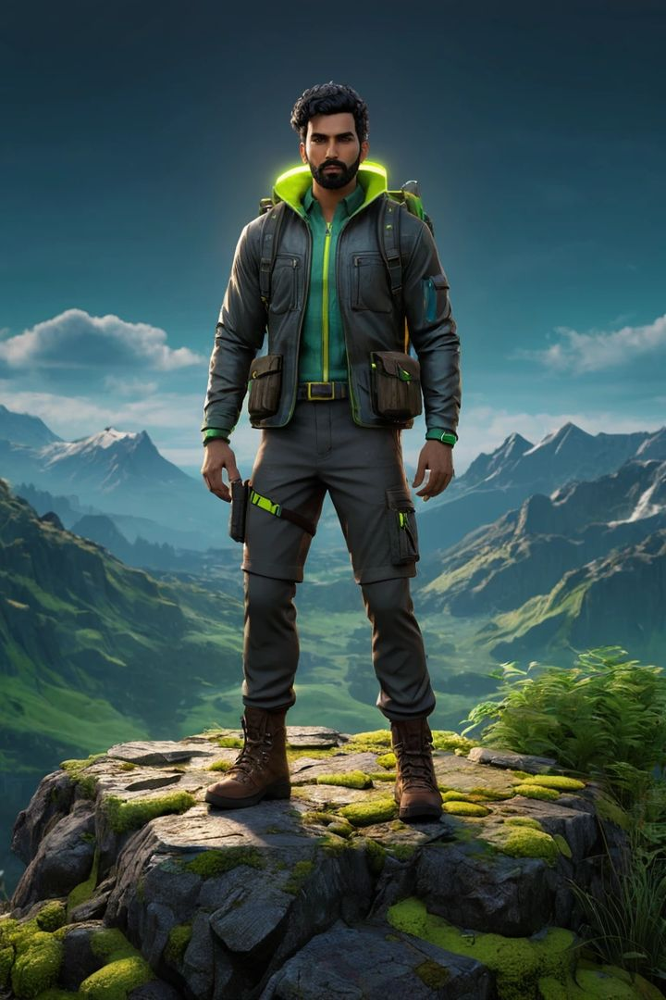
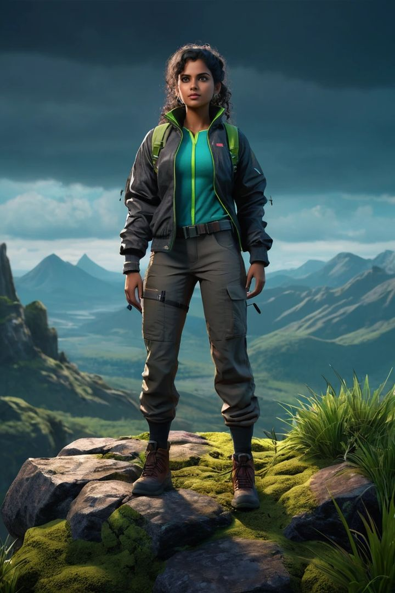

Trail Seek is a mobile adventure platform where people discover, book and safely enjoy treks, hikes and outdoor adventures, all in one place, and are rewarded for every journey they complete.
Today an adventurer has to search scattered sources for an activity, call to check whether a slot is free, find enough friends to meet a minimum group size, guess the weather, and then hope nobody gets separated on a trail with no mobile signal. Trail Seek replaces that whole chain with a single, unified system.
Treks, hikes, rafting, kayaking, coracle rides, cycling, camping, safaris and stays: one account, one checkout, one ticket.
Real-time slots and capacity, instant confirmation and a QR ticket that works offline at the gate.
Mark interest in a date and get matched with other adventurers to meet minimum group sizes. Nobody misses a trek for lack of company.
Phone-to-phone Bluetooth links every member of a group with no mobile network. If someone falls behind, the group knows within seconds.
XP, levels, badges, achievements and an avatar that grows with every adventure, so people come back.
Forecasts and trail conditions for the exact place and time slot, with alerts before and during the trip.
Two problems nobody else solves together: "I can't book, I don't have enough people" (Team Up) and "What if someone gets lost on the trail?" (Digital Rope).
Trail Seek launches in Kerala, beginning with the forest eco-tourism programmes of Thrissur district: Athirappilly–Vazhachal, Peechi–Vazhani, Chimmony and Chulannur, which cover guided forest treks, coracle rides, cycling and nature stays. From there it expands across Kerala, then the Western Ghats and the rest of India.
Interest in outdoor adventure is growing fast, but the experience around it is fragmented, uncertain and, on the trail itself, sometimes unsafe.
Activities are spread across operator pages, social media posts and word of mouth. Prices, timings and rules are hard to find and often out of date.
Travellers cannot see free slots or capacity in real time. They call ahead, travel on a guess, or arrive to find a programme full or closed.
Many guided treks run only for a minimum number of people. A forest trek at Vazhachal, for example, needs at least four. Someone with one friend, or travelling alone, simply cannot go.
Forest trails often have no mobile signal. When a member falls behind or takes a wrong turn, the group may not notice for a long time, and calling them is impossible.
Rain, mist and heat change trail safety by the hour, especially in the monsoon. Generic forecasts are not tied to the trail, the slot or the activity.
A completed trek leaves nothing behind: no record, no progress, no recognition. Most adventurers do one trip a year and forget the platform they used.
To be the platform every adventurer opens first: the place where outdoor journeys are found, shared, completed safely and celebrated.
To make adventure easy to book, possible for anyone regardless of group size, safe even without a network, and rewarding enough to do again.
| Principle | What it means in the product |
|---|---|
| No one left behind | Group safety is a core feature, not an add-on. Every group session can be linked by the Digital Rope. |
| One system, every adventure | One account, profile, wallet, ticket format and progress system across every activity type and operator. |
| Honest information | Real prices, real availability and real risks for every activity. No trail is presented as easier or safer than it is. |
| Adventure for everyone | Team Up opens group-only experiences to solo travellers, couples and small groups. |
| Earned, not bought | Levels, badges and avatar gear are unlocked by doing real adventures, safely. |
| Respect for nature | Capacity limits, permits and forest rules are built into booking; responsible behaviour is rewarded. |
Trail Seek is not a booking site with extras. It is one connected system: what you book, who you go with, how you stay safe and what you achieve all feed into each other.
| Pillar | What it does | How it connects |
|---|---|---|
| Unified Booking | Every adventure type in one catalogue with one checkout and one QR ticket. | A booking creates the group, the weather watch and the XP opportunity. |
| Live Availability | Real-time slots, capacity and closures. | Feeds Team Up so open seats can be filled by matched adventurers. |
| Team Up | Interest pools per activity and date; matching to meet minimum group sizes. | A completed team becomes a booked group with a Digital Rope session. |
| Digital Rope | Bluetooth group link with alerts, SOS and live positions, no network required. | Safe completion earns XP and badges; incidents inform trail safety data. |
| Gamification | XP, levels, badges, achievements, avatar progression and leaderboards. | Rewards bookings, completion, safety and community. Drives repeat use. |
| Live Weather | Slot-level forecasts, trail conditions and alerts. | Shapes booking advice, reminders and on-trail warnings. |
One identity across everything. An explorer has one profile that holds their bookings, tickets, teams, trek history, level, badges and avatar. The same profile works for a coracle ride at Peechi and a peak trek in the Western Ghats.
Guided forest treks, day hikes, ridge walks, peak climbs, night treks, birding walks
Coracle rides, kayaking, rafting, bamboo rafting, waterfall visits
Wildlife safaris, cycling trails, camping, tree houses, forest stays
Many guided programmes run only for a minimum group size. Team Up lets anyone mark interest in an activity on a date, and fills the remaining places with other adventurers who want the same trip.
Example: a Vazhachal forest trek, minimum four people. Anu wants to go on Saturday but is on her own. She opens the trek, picks Saturday and taps "I'm interested". Three other adventurers see an open Saturday team, 1 of 4, and join. When the fourth person joins, the team is complete: everyone is confirmed and booked together, and the group is ready on the day.
Verified profiles, levels and ratings are visible before the day. Teams can be women-only or beginner-friendly, guides lead every guided programme, and anyone can report or block. Phone numbers are never shared.
The Digital Rope links every phone in a group over Bluetooth Low Energy. It needs no mobile signal, no internet and no pairing, and it works between Android phones and iPhones.
Each phone sends a small heartbeat every couple of seconds and listens for everyone else's. Members also relay what they hear, so the link reaches people beyond direct range.
Phones share GPS positions with each other over Bluetooth. Every member sees the group on a satellite map with each person's path and live distance, even without signal.
Only the organizer starts and ends a session. Members can ask to start; when the organizer accepts, every phone counts down and starts at the same moment.
"I'm OK", "Wait for me" and "Need help" reach every phone in range instantly, with no network.
Forest trails are where mobile networks fail and where people most often get separated. Calling a lost member is impossible there. The Digital Rope works exactly where calls don't, turning "we noticed an hour later" into "we noticed in under a minute".
Trail Seek turns outdoor life into a game worth playing: each completed adventure earns experience, unlocks badges and grows the explorer's own character.






Explorer avatars. Every user picks a trekker character and grows it as they progress.
Why gamification here works: adventure already has natural achievements, like distance, altitude, new places and teamwork. Trail Seek records them automatically and makes them visible, so one trip a year becomes a progression people want to continue.
Temperature, rain probability, wind and visibility for the exact destination and time slot, not just the nearest city.
Heavy rain, thunderstorm or heat warnings for your booked date, pushed 48 hours, 24 hours and on the morning of the trip.
If an activity is closed for weather, the booking is moved or refunded automatically and the team is told at once.
Season guidance and "best days this week" suggestions on every activity page, plus monsoon-only experiences such as waterfall trails.
During a session, worsening conditions are shown to the whole group. With no signal, the last forecast is kept on the phone.
Recent explorers post conditions such as leeches, slippery rocks or high water, which earns them XP and keeps the next group informed.
Trail Seek's community turns individual trips into shared stories and new teams.
Photos and stories from completed adventures, with likes and comments; filter by All, Following or Nearby.
Avatar, level, badges, archetype, skills, records and full adventure history in one public character sheet.
Follow explorers, see what they book, and join their open Team Up teams.
Leaderboards by XP and rank that celebrate the most active and safest adventurers.
Create a group for a trip, invite by code or QR, and run it as a Digital Rope session on the day.
Reporting, blocking and content review keep the community welcoming and safe.
| Stage | What the explorer does | What Trail Seek does |
|---|---|---|
| Inspire | Scrolls the feed, sees a friend's waterfall trek. | Shows the same trek, its price, the next open dates and any open team. |
| Plan | Picks a date and checks the weather. | Live slots, slot-level forecast and best-day suggestions. |
| Team Up | Has only one friend; minimum is four. Marks interest. | Opens a team on that date and fills it with matched explorers. |
| Book | Pays once the team is complete. | Confirms everyone together; issues offline QR tickets. |
| Prepare | Reads the gear list and meets the team. | Checklist, weather alerts, offline maps and team chat. |
| Go | Starts the trek with the group. | Digital Rope links every phone; live map, paths and alarms if anyone drifts. |
| Celebrate | Finishes and shares a photo. | Records the trek, awards XP, badges and avatar progress, and posts to the feed. |
| Return | Sees a quest one step from the next level. | Suggests the next adventure and an open team for it. |
The loop: inspiration leads to booking, booking to a safe group adventure, the adventure to rewards and a story, and the story inspires the next explorer. Every feature feeds the next.
| Segment | Need | Trail Seek answer |
|---|---|---|
| Students and young professionals | Affordable weekend adventures; often short of a full group. | Team Up, levels and leaderboards, community. |
| Solo travellers and couples | Access to group-only programmes; safety with strangers. | Team Up with verified profiles and Digital Rope. |
| Families | Easy, safe, well-informed outings. | Clear pricing, difficulty, weather and group safety. |
| Clubs, colleges and companies | Large group bookings and coordination. | Group booking, roster and Digital Rope for big groups. |
| Visitors from other states and abroad | Trustworthy local information in one place. | Unified catalogue, honest content and offline tickets. |
| Operators and destinations | Fuller slots, fewer no-shows, safer groups. | Live capacity, Team Up demand and safety reporting. |
[1] IMARC Group, India Adventure Tourism Market report. [2] IMARC Group, Global Adventure Tourism Market report. [3] Kerala Tourism, Tourist Statistics 2024. Market forecasts are third-party estimates.
Others solve one piece: booking, maps or social. Trail Seek is the only platform that brings booking, group formation, offline group safety and progression into one system.
| Capability | General travel booking apps | Trek operator pages | Maps and fitness apps | Chat groups | Trail Seek |
|---|---|---|---|---|---|
| All adventure types, one checkout | Partial | No | No | No | Yes |
| Live slots and capacity | Partial | Partial | No | No | Yes |
| Match strangers to meet minimum group size | No | No | No | Informal | Yes |
| Group safety with no mobile network | No | No | No | No | Yes |
| Live group map and paths offline | No | No | Solo only | No | Yes |
| Levels, badges, avatar progression | No | No | Fitness only | No | Yes |
| Slot-level weather and closures | No | Partial | General | No | Yes |
| Community tied to real trips | No | No | Partial | Partial | Yes |
A percentage of each booking paid by the operator, plus a small convenience fee per ticket. This is the primary revenue line.
Optional membership: offline maps for whole regions, extended Digital Rope features, priority Team Up, member discounts and trip insurance.
Featured placement for operators, stays and new destinations, clearly labelled and never mixed into safety information.
Packages for colleges, clubs and companies: bulk bookings, managed teams and Digital Rope for large groups.
Commissions on gear rental, guides, transport and insurance offered at the point of booking.
Aggregated, anonymised visitor and safety reports for destinations and authorities that want to plan capacity and safety.
The loop drives the economics: gamification brings users back cheaply, Team Up turns lost demand into bookings, and the Digital Rope earns the trust of families and first-timers.
| Metric | Why it matters |
|---|---|
| Bookings and gross booking value | Core revenue driver |
| Team Up fill rate and time to fill | Proof that matching unlocks new demand |
| Repeat adventurers within 90 days | Shows whether gamification is working |
| Digital Rope sessions; time to detect a separation; reconnection time | Safety performance and trust |
| Ratings per activity and per team | Quality and community health |
Trail Seek is built to work where adventure happens: in forests, on rivers and on ridges, often with no network at all.
A single cross-platform codebase delivers the same experience on both, with native Bluetooth, GPS and notifications.
Activity details, tickets, maps, tracking and the Digital Rope all work without a connection, and sync when one returns.
Managed authentication, a relational database with per-record access rules, encrypted storage and real-time updates.
Low-energy advertising for heartbeats plus short data exchanges for the member list, positions and start and end signals. No pairing, Android and iOS together.
Battery-aware GPS recording of distance, elevation and path, with a foreground service so tracking continues with the screen off.
Real-time availability and weather feeds, operator integrations through secure APIs, and alarm-grade notifications for safety events.
Trail Seek launches with the forest eco-tourism programmes of Thrissur district at Athirappilly–Vazhachal, Peechi–Vazhani, Chimmony and Chulannur. These include guided forest treks, coracle rides, cycling, waterfall visits and nature stays, 22 programmes in all, many of which need a minimum group size. That makes them an ideal first home for Team Up and the Digital Rope.
| Phase | Scope | Focus |
|---|---|---|
| Phase 1 Pilot | Thrissur district | Closed pilot with invited explorers and guides; Digital Rope field calibration; live payments; booking confirmation flow with destinations. |
| Phase 2 Kerala | Idukki, Wayanad, Munnar, Palakkad and more | Public launch on Android and iOS; Team Up at scale; Malayalam; weather alerts; operator dashboard. |
| Phase 3 Western Ghats | Tamil Nadu, Karnataka, Goa | Operator network; Pro membership; institutional packages; trail reports. |
| Phase 4 India | Himalaya and national circuits | Multi-day expeditions; insurance and gear partners; national leaderboards and seasonal quests. |
Adventure clubs, NSS and NCC units, and college fests, with team leaderboards.
Trek leaders and outdoor creators sharing trips and Team Up links.
Every open team, badge and finished trek is shareable and brings in new explorers.
| When | Milestone |
|---|---|
| Nov 2026 | Thrissur closed pilot; content review with destinations; payment sandbox |
| Dec 2026 | Live payments; booking confirmation integration; Malayalam |
| Jan 2027 | Public beta on Play Store and App Store; Team Up public; weather alerts |
| Feb 2027 | Operator dashboard; more Thrissur attractions; first seasonal quest |
| Mar 2027 | Public launch for the season; expansion to the next Kerala districts |
Risks, dangerous sections, wildlife notes and emergency contacts are required fields on every activity. No trail is presented as safer than it is.
Positions are shared only between members of the same active group, and only during the session. They are never sold or shown publicly.
Verified profiles, ratings, women-only and beginner-friendly teams, in-app messaging without sharing phone numbers, reporting and blocking.
Guided programmes are always led by authorised guides. Trail Seek supports them and never replaces them. Permits and capacity limits are built into booking.
Encryption in transit and at rest, per-record access rules, minimal data collection, account deletion in the app, and a published privacy policy.
Leave-no-trace guidance, rewards for responsible behaviour, and capacity limits that protect sensitive forest areas.
The Digital Rope is a safety aid, not a guarantee. It is designed to detect separation early and help a group regroup, alongside guides, briefings and good judgement.
| Risk | Mitigation |
|---|---|
| Bluetooth behaviour varies by phone model | Testing across devices, configurable thresholds, field calibration in the pilot, and relaying between members to extend range. |
| iPhone background limits | A data-exchange path that keeps working in the background; guidance to keep the app open during sessions; locked-screen field tests. |
| Team Up teams don't fill | Cut-off rules with no charge if a team doesn't fill, nudges to interested users, and suggestions for the nearest filling date. |
| Safety of meeting strangers | Verified profiles, ratings, women-only teams, guided programmes, in-app chat and quick reporting. |
| Prices or rules change at the source | Live operator integrations; scheduled data refresh; clear "last updated" stamps. |
| Overbooking a slot | Real-time capacity with seat holds during payment; reconciliation with destinations. |
| Seasonal demand (monsoon) | Monsoon-specific experiences, weather-led rescheduling, and expansion to regions with different seasons. |
| Payment disputes | Licensed payment gateway, automatic refunds, and cancellation rules shown before payment. |
Leads product vision and builds the platform, including the Digital Rope and the gamification engine.
Owns testing, release quality and security reviews across the app and cloud platform.
Researches destinations, programmes, safety notes and partnerships, and keeps every activity accurate.
Adventure tourism is one of the fastest-growing parts of travel, and Kerala is one of India's most-visited states. Yet the people who want these experiences still struggle to find them, to fill a group, and to stay together once they are out there.
Turns "we don't have enough people" into a booked team.
Turns "someone is missing" into "we found them in a minute".
Turns one trip a year into a journey people keep coming back to.
Turns guesswork into confident plans.
Trail Seek: every adventure, one app, and no one left behind.
This report describes the Trail Seek platform and its planned roadmap. Market figures are third-party estimates cited in Section 12. © 2026 Trail Seek. Confidential.